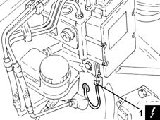
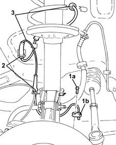

3340A26 left front wheel rpm sensor - r r
- Path
- Procedures > 33 BRAKING SYSTEM > 3340 A(B.S. ANTI-LOCK BRAKING SYSTEM .) > 3340A abs check/adjustment devices > 3340A26 left front wheel rpm sensor - r r
- Kind
- repair procedure (removal / refitting; the operation number is the code)
- Applies to
- engines: 1.2 8v, 1.2 16v, 1.4 16v; all production periods
- Interactive page
- https://sloeber94.github.io/elrnDB-lYpsln/en/#/2429188
Applies to: engines: 1.2 8v, 1.2 16v, 1.4 16v; all production periods
 Removing
Removing
 Refitting
RefittingPosition the vehicle on the ramp.
Proceed with removal 5530B10 battery - r+r .
Proceed with removal 5530B52 Battery DRIP TRAY/SUPPORT - R.R. .
Proceed with removal 4450B02 left front wheel r r .
Proceed with removal 7055B90 Left front WHEEL ARCH LINER - R.R. .
1. Disconnect the electrical connection for the left front wheel rpm sensor.
 | Name | Connector |
|---|---|---|
1 | Left. front wheel sensor for ABS |

Applies to: engines: 1.2 8v, 1.2 16v, 1.4 16v; all production periods
1. Undo the bolt (1a) and disconnect the left front wheel rpm sensor (1b) from the front pillar.
2. Disengage the left front wheel rpm sensor electrical wiring from the attachments in the wheelarch.
3. Remove the left front wheel rpm sensor after withdrawing the electrical wiring from the passage on the bulkhead.

Applies to: engines: 1.2 8v, 1.2 16v, 1.4 16v; all production periods
Refitting
RemovingRefit the left front wheel rpm sensor by passing the electrical wiring through the passage on the bulkhead.
Refit the left front wheel rpm sensor back in its housing on the pillar and fix it tightening the bolt to the recommended torque.
 | Fastening | Component | Ø | Value (daNm) |
|---|---|---|---|---|
- | Bolt | ABS SYSTEM FRONT WHEEL RPM SENSOR | M6 | (Stub axle side) 0.6 ÷ 0.8 |
Secure the right front wheel rpm sensor electrical wiring to the attachments in the wheelarch.
Connect the electrical connection for the left front wheel rpm sensor.
Proceed with refitting 7055B90 Left front WHEEL ARCH LINER - R.R. .
Proceed with refitting 4450B02 left front wheel r r .
Proceed with refitting 5530B52 Battery DRIP TRAY/SUPPORT - R.R. .
Proceed with refitting 5530B10 battery - r+r .
Remove the car from the ramps.
Topics linked from this page (5)
- 4450B02 left front wheel r r
- 5530B10 battery - r+r
- 5530B52 Battery DRIP TRAY/SUPPORT - R.R.
- 7055B90 Left front WHEEL ARCH LINER - R.R.
- K70 Left. front wheel sensor for ABS